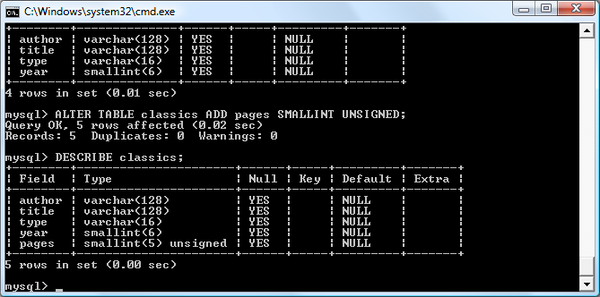

With well over 10 million installations, MySQL is probably the most
popular database management system for web servers. Developed in the
mid-1990s, it’s now a mature technology that powers many of today’s
most-visited internet destinations.
One reason for its success is that, like PHP, it’s free to use. But
it’s also extremely powerful and exceptionally fast. MySQL is also highly
scalable, which means that it can grow with your website; the latest
benchmarks are kept
up to date online.
MySQL Basics
A database is a structured collection of records
or data stored in a computer system and organized in such a
way that it can be quickly searched and information can be rapidly
retrieved.
The SQL in MySQL stands for Structured Query
Language. This language is loosely based on English and
also used in other databases such as Oracle and Microsoft SQL
Server. It is designed to allow simple requests from a database
via commands such as:
A MySQL database contains one or more tables, each
of which contains records or rows. Within
these rows are various columns or fields that
contain the data itself.
Table 8-1 shows
the contents of an example database of five publications, detailing
the author, title, type, and year of publication.
Table 8-1. Example of a simple database
Author
Title
Type
Year
Mark Twain
The Adventures of Tom Sawyer
Fiction
1876
Jane Austen
Pride and Prejudice
Fiction
1811
Charles Darwin
The Origin of Species
Nonfiction
1856
Charles Dickens
The Old Curiosity Shop
Fiction
1841
William Shakespeare
Romeo and Juliet
Play
1594
Each row in the table is the same as a row in a MySQL table,
a column in the table corresponds to a column in MySQL, and
each element within a row is the same as a MySQL field.
To uniquely identify this database, I’ll refer to it as the
publications database in the examples that follow.
And, as you will have observed, all these publications are considered
to be classics of literature, so I’ll call the table within
the database that holds the details classics.
Summary of Database Terms
The main terms you need to acquaint yourself with for now
are as follows:
Database
The overall container for a collection of data
Table
A sub-container within a database that stores the actual
data
Row
A single record within a table, which may contain several
fields
Column
The name of a field within a row
I should note that I’m not trying to reproduce the precise
terminology used about relational databases but just to provide
simple, everyday terms to help you quickly grasp basic concepts
and get started with a database.
Accessing MySQL via the Command Line
There are three main ways you can interact with MySQL: using
a command line, via a web interface such as phpMyAdmin, and
through a programming language like PHP. We’ll start doing the
third of these in
Chapter 10,
but for now, let’s look at the first two.
Graphical User Interfaces
You can also use a visual or graphical tool like the
MySQL Workbench or DBeaver and MySQL addon is also available
for favorite IDEs including Visual Studio Code and PhpStorm.
Starting the Command-Line Interface
The following sections describe relevant instructions
for Windows, macOS, and Linux.
Windows users
If you installed AMPPS (as explained in
Chapter 2) in the usual way, you will be
able to access the MySQL executable from the
following directory:
C:\Program Files\Ampps\mysql\bin
Note
If you installed AMPPS in any other place,
you will need to use that directory instead,
such as the following for 32-bit installations
of AMPPS:
C:\Program Files (x86)\Ampps\mysql\bin
By default, the initial AMPPS MySQL user
is root, and it will have a default
password of mysql. So, to enter MySQL’s
command-line interface, select Start→Run, enter
CMD into the Run box, and press
Return. This will call up a Windows command
prompt. From there, enter the following (making
any appropriate changes as just discussed):
cd C:\"Program Files\Ampps\mysql\bin"
mysql -u root -pmysql
The first command changes to the MySQL directory,
and the second tells MySQL to log you in as
user root, with the password mysql.
You will now be logged in to MySQL and can start
entering commands.
If you are using Windows PowerShell (rather
than a command prompt), it will not load commands
from the current location as you must explicitly
specify where to load a program from, in which
case you would, instead, enter the following
(note the preceding ./ before the
mysql command):
cd C:\"Program Files\Ampps\mysql\bin"
./mysql -u root -pmysql
To be sure everything is working as it should
be, enter the following—the results should be
similar to
Figure 8-1:
SHOWdatabases;
Figure 8-1. Accessing MySQL from
a Windows command prompt
To proceed with this chapter, you should
have installed AMPPS as detailed in
Chapter 2. You should also have the web
server running and the MySQL server started.
To enter the MySQL command-line interface,
start the Terminal program (which should be
available in Finder→Utilities). Then call up
the MySQL program, which will have been installed
in the directory /Applications/ampps/mysql/bin.
By default, the initial AMPPS MySQL user
is root, and it will have a password
of mysql. So, to start the program,
type the following:
This command tells MySQL to log you in as
user root using the password mysql.
To verify that all is well, type the following
(Figure
8-2 should be the result):
SHOWdatabases;
Figure 8-2. Accessing MySQL from
the macOS Terminal program
If you receive an error such as Can't
connect to local MySQL server through socket,
you may need to first start the MySQL server
as described in
Chapter 2.
On a system running a Unix-like operating
system such as Linux, you may already have PHP
and MySQL installed and running, and be able
to enter the examples in the next section (if
not, you can follow the procedure outlined in
Chapter 2 to install AMPPS). First, you
should type the following to log in to your
MySQL system:
mysql -u root -p
This tells MySQL to log you in as the user
root and to request your password.
If you have a password, enter it; otherwise,
just press Return.
Once you are logged in, type the following
to test the program—you should see something
like
Figure 8-3 in response:
SHOWdatabases;
Figure 8-3. Accessing MySQL using
Linux
If this procedure fails at any point, please
refer to
Chapter 2 to ensure that you have MySQL
properly installed. Otherwise, you should now
be ready to move on to the next section,
“Using the Command-Line Interface”.
MySQL on a remote server
If you are accessing MySQL on a remote server,
it will probably be a Linux/FreeBSD/Unix type
of box, and you will connect to it via the secure
SSH protocol. Once in there, you might find
that things are a little different, depending
on how the system administrator has set the
server up—especially if it’s a shared hosting
server. Therefore, you need to ensure that you
have been given access to MySQL and that you
have your username and password. Armed with
these, you can then type the following, where
username is the name supplied:
mysql -u username -p
Enter your password when prompted. You can
then try the following command, which should
result in something like
Figure
8-3:
SHOWdatabases;
There may be other databases already created,
and the test database may not be there.
Bear in mind also that system administrators
have ultimate control over everything and that
you can encounter some unexpected setups. For
example, you may find that you are required
to preface all database names that you create
with a unique identifying string to ensure that
your names do not conflict with those of databases
created by other users.
Therefore, if you have any problems, talk
with your system administrator, who will get
you sorted out. Just let the sysadmin know that
you need a username and password. You should
also ask for the ability to create new databases
or, at a minimum, to have at least one database
created for you ready to use. You can then create
all the tables you require within that database.
Using the Command-Line Interface
From here on out, it makes no difference whether
you are using Windows, macOS, or Linux to access MySQL
directly, as all the commands used (and errors you may
receive) are identical.
The semicolon
Let’s start with the basics. Did you notice
the semicolon (;) at the end of
the SHOW databases; command that
you typed? The semicolon is used by MySQL to
separate or end commands. If you forget to enter
it, MySQL will issue a prompt and wait for you
to do so. The required semicolon was made part
of the syntax to let you enter multiline commands,
which can be convenient because some commands
get quite long. It also allows you to issue
more than one command at a time by placing a
semicolon after each one. The interpreter gets
them all in a batch when you press the Enter
(or Return) key and executes them in order.
Note
It’s very common to receive a MySQL prompt
instead of the results of your command;
it means that you forgot the final semicolon.
Just enter the semicolon and press the Enter
key, and you’ll get what you want.
There are six different prompts that MySQL
may present you with (see
Table 8-2), so you will always know where
you are during a multiline input.
Table 8-2. MySQL’s six command
prompts
MySQL prompt
Meaning
mysql>
Ready and waiting for a command
->
Waiting for the next line of a command
'>
Waiting for the next line of a string
started with a single quote
">
Waiting for the next line of a string
started with a double quote
`>
Waiting for the next line of a string
started with a backtick
/*>
Waiting for the next line of a comment
started with /*
Canceling a command
If you are partway through entering a command
and decide you don’t wish to execute it after
all, you can enter \c and press
Return. This is handy if you are within a set
of multi-line statements, or simply to save
you backspacing a lot.
Example
8-1 shows how to use the command.
Example 8-1. Canceling a line of input
meaninglessgibberish\c
When you type that line, MySQL will ignore
everything you typed and issue a new prompt.
Without the \c, it would have displayed
an error message. Be careful, though: if you
have opened a string or comment, close it first
before using the \c or MySQL will
think the \c is just part of the
string.
Example 8-2 shows the right way to do this.
Example 8-2. Canceling input from inside
a string
thisis"meaningless gibberish"\c
Also note that using \c after
a semicolon will not cancel the preceding command,
as it is then a new statement.
MySQL Commands
You’ve already seen the SHOW command,
which lists tables, databases, and many other items.
The commands you’ll use most often are listed in
Table
8-3.
Table 8-3. Common MySQL commands
Command
Action
ALTER
Alter a database or table
BACKUP
Back up a table
\c
Cancel input
CREATE
Create a database, table or index
DELETE
Delete a row from a table
DESCRIBE
Describe a table’s columns
DROP
Delete a database or table
EXIT (Ctrl-C)
Exit (on some systems)
GRANT
Change user privileges
HELP (\h,
\?)
Display help
INSERT
Insert data
LOCK
Lock table(s)
QUIT (\q)
Same as EXIT
RENAME
Rename a table
SHOW
List details about database(s), table(s),
column(s), or server status
SOURCE
Execute a file
STATUS (\s)
Display the current status
TRUNCATE
Empty a table
UNLOCK
Unlock table(s)
UPDATE
Update an existing record
USE
Use a database
I’ll cover most of these as we proceed, but first,
you need to remember a couple of points about MySQL
commands:
SQL commands and keywords are case-insensitive.
CREATE, create, and
CrEaTe all mean the same thing. However,
for the sake of clarity, you may prefer to use uppercase.
Table names are case-sensitive on Linux and macOS
but case-insensitive on Windows. So, for the sake
of portability, you should always choose a case
and stick to it. The recommended style is to use
lowercase for table names.
Creating a database
If you are working on a remote server and
have only a single user account and access to
a single database that was created for you,
move on to the section
“Creating a table”.
Otherwise, get the ball rolling by issuing the
following command to create a new database called
publications:
CREATEDATABASEpublications;
A successful command will return a message
that doesn’t mean much yet—Query OK, 1
row affected (0.00 sec)—but will make
sense soon. Now that you’ve created the database,
you want to work with it, so issue the following
command:
USEpublications;
You should now see the message Database
changed and will then be set to proceed
with the following examples.
Creating users
Now that you’ve seen how to use MySQL and
create your first database, it’s time to look
at how you create users, as you probably won’t
want to grant your PHP scripts root access to
MySQL—it could cause a real headache should
you get hacked.
To create a user, issue the CREATE
USER command, which takes the following
form (don’t type this in; it’s not an actual
working command):
CREATE USER 'username'@'hostname' IDENTIFIED BY 'password';
GRANT PRIVILEGES ON database.object TO 'username'@'hostname';
This should all look pretty straightforward,
with the possible exception of the database.object part, which
refers to the database itself and the objects
it contains, such as tables (see
Table 8-4).
Table 8-4. Example parameters for
the GRANT command
Arguments
Meaning
*.*
All databases and all their objects
database.*
Only the database called database and all its
objects
database.object
Only the database called database and its object
called object
So, let’s create a user who can access just
the new publications database and all
its objects, by entering the following commands
(replacing the username jim and also
the password password with ones of
your choosing):
What this does is allow the user jim@localhost
full access to the publications database
using the password password. You can
test whether this step has worked by entering
quit to exit and then rerunning
MySQL the way you did before, but instead of
logging in as root, log in with whatever username
you created (e.g., jim). See
Table 8-5 for the correct command for your
operating system. Modify it as necessary if
the mysql client program is installed
in a different directory on your system.
Table 8-5. Starting MySQL and logging
in as jim@localhost
OS
Example command
Windows
C:\"Program Files\Ampps\mysql\bin\mysql"
-u jim -p
macOS
/Applications/ampps/mysql/bin/mysql
-u jim -p
Linux
mysql -u jim –p
All you have to do now is enter your password
when prompted and you will be logged in.
If you choose to, you can place your password
immediately following the -p (without
any spaces) to avoid having to enter it when
prompted, but this is considered poor practice
because if other people are logged in to your
system, there may be ways for them to look at
the command you entered and find out your password.
Note
You can grant only privileges that you
already have, and you must also have the
privilege to issue GRANT commands.
There are a whole range of privileges you
can choose to grant if you are not granting
all privileges. For further details on the
GRANT command and the
REVOKE command, which can remove
privileges once granted, see the
documentation. Also, be aware that if
you create a new user but do not specify
an IDENTIFIED BY clause, the
user will have no password, a situation
that is very insecure and should be avoided.
Creating a table
At this point, you should now be logged in
to MySQL with ALL privileges granted
for the database publications (or a
database that was created for you), so you’re
ready to create your first table. Make sure
the correct database is in use by typing the
following (replacing publications
with the name of your database if it is different):
USEpublications;
Now enter the command in
Example 8-3 one line at a time.
The final two words in this command require
a little explanation. MySQL can process
queries in many different ways internally,
and these different ways are supported by
different engines. From version
5.6 onward InnoDB is the default
storage engine for MySQL, and we use it
here because it supports FULLTEXT
searches. As long as you have a relatively
up-to-date version of MySQL, you can omit
the ENGINE InnoDB section of
the command when creating a table, but I
have kept it in for now to emphasize that
this is the engine being used.
InnoDB is generally more efficient and
the recommended option. If you installed
the AMPPS stack as detailed in
Chapter 2, you should have at least
version 5.6.35 of MySQL.
Note
You could also issue the previous command
on a single line, like this:
But MySQL commands can be long and complicated,
so I recommend using the format shown in
Example 8-3 until you are comfortable
with longer ones.
MySQL should then issue the response
Query OK, 0 rows affected, along
with how long it took to execute the command.
If you see an error message instead, check your
syntax carefully. Every parenthesis and comma
counts, and typing errors are easy to make.
To check whether your new table has been
created, type the following:
DESCRIBEclassics;
All being well, you will see the sequence
of commands and responses shown in
Example 8-4, where you should particularly
note the table format displayed.
Example 8-4. A MySQL session: creating
and checking a new table
mysql> USE publications;
Database changedmysql> CREATE TABLE classics (
-> author VARCHAR(128),
-> title VARCHAR(128),
-> type VARCHAR(16),
-> year CHAR(4)) ENGINE InnoDB;
Query OK, 0 rows affected (0.03 sec)mysql> DESCRIBE classics;
+--------+--------------+------+-----+---------+-------+| Field | Type | Null | Key | Default | Extra |+--------+--------------+------+-----+---------+-------+| author | varchar(128) | YES | | NULL | || title | varchar(128) | YES | | NULL | || type | varchar(16) | YES | | NULL | || year | char(4) | YES | | NULL | |+--------+--------------+------+-----+---------+-------+4 rows in set (0.00 sec)
The DESCRIBE command is an invaluable
debugging aid when you need to ensure that you
have correctly created a MySQL table. You can
also use it to remind yourself about a table’s
field or column names and the types of data
in each one. Let’s look at each of the headings:
Field
The name of each field or column within
a table
Type
The type of data being stored in the
field
Null
Whether the field is allowed to contain
a value of NULL
Key
What type of key, if any, has been applied
(keys or indexes in MySQL
are quick ways to look up and search for
data)
Default
The default value that will be assigned
to the field if no value is specified when
a new row is created
Extra
Additional information, such as whether
a field is set to auto-increment
Data Types
In Example
8-3, you may have noticed that three of the table’s
fields were given the data type of VARCHAR,
and one was given the type CHAR. The term
VARCHAR stands for VARiable lengthCHARacter string, and the command takes a numeric
value that tells MySQL the maximum length allowed for
a string stored in this field.
Both CHAR and VARCHAR accept
text strings and impose a limit on the size of the field.
The difference is that every string in a CHAR
field has the specified size. If you put in a smaller
string, it is padded with spaces. A VARCHAR
field does not pad the text; it lets the size of the
field vary to fit the text that is inserted. But
VARCHAR requires a small amount of overhead
to keep track of the size of each value. So, CHAR
is slightly more efficient if the sizes are similar
in all records, whereas VARCHAR is more
efficient if sizes can vary a lot and get large. In
addition, the overhead causes access to VARCHAR
data to be slightly slower than to CHAR
data, but in most use cases that’s not a concern as
the performance difference will not be noticeable.
Another feature of character and text columns, important
for today’s global web reach, is character sets.
These assign particular binary values to particular
characters. The character set you use for English is
obviously different from the one you’d use for Russian.
You can assign the character set to a character or text
column when you create it.
VARCHAR is useful in our example, because
it can accommodate author names and titles of different
lengths while helping MySQL plan the size of the database
and perform lookups and searches more easily. Just be
aware that if you ever attempt to assign a string value
longer than the length allowed, it will be truncated
to the maximum length declared in the table definition.
The year field, however, has predictable
values, so instead of VARCHAR we use the
more efficient CHAR(4) data type. The parameter
of 4 allows for 4 bytes of data, supporting
all years from –999 to 9999; a byte comprises 8 bits
and can have the values 00000000 through 11111111, which
are 0 to 255 in decimal.
You could, of course, just store two-digit values
for the year, but if your data is still going to be
needed in the following century, or may otherwise wrap
around, it will have to be sanitized first—think of
the “millennium bug” that would have caused dates beginning
on January 1, 2000, to be treated as 1900 on many of
the world’s biggest computer installations.
Note
I didn’t use the YEAR data type
in the classics table because it supports
only the years 0000 and 1901 through 2155. This
is because MySQL stores the year in a single byte
for reasons of efficiency, but it means that only
256 years are available, and the publication years
of the titles in the classics table are
well before 1901. I used the CHAR type
instead, but another option is to use either the
INT or the SMALLINT data
type.
The CHAR data type
Table 8-6 lists the CHAR data
types. Both types offer a parameter that sets
the maximum (or exact) length of the string
allowed in the field. As the table shows, each
type has a built-in maximum number of bytes
it can occupy.
The BINARY data types (see
Table 8-7) store strings of bytes that do
not have an associated character set. For example,
you might use the BINARY data type
to store a GIF image.
Table 8-7. MySQL’s BINARY data
types
Data type
Bytes used
Examples
BINARY(n)
Exactly n
(<= 255)
As CHAR but contains
binary data
VARBINARY(n)
Up to n (<=
65535)
As VARCHAR but contains
binary data
The TEXT data types
Character data can also be stored in one
of the TEXT fields. The differences
between these fields and VARCHAR
fields are small:
TEXT fields cannot have
default values.
MySQL indexes only the first n
characters of a TEXT column
(you specify n when you create
the index).
What this means is that VARCHAR
is the better and faster data type to use if
you need to search the entire contents of a
field. If you will never search more than a
certain number of leading characters in a field,
you should probably use a TEXT
data type (see
Table 8-8).
Table 8-8. MySQL’s TEXT
data types
Data type
Bytes used
Attributes
TINYTEXT(n)
Up to n (<=
255)
Treated as a string with a character
set
TEXT(n)
Up to n (<=
65535)
Treated as a string with a character
set
MEDIUMTEXT(n)
Up to n (<=
1.67e + 7)
Treated as a string with a character
set
LONGTEXT(n)
Up to n (<=
4.29e + 9)
Treated as a string with a character
set
The data types that have smaller maximums
are also more efficient; therefore, you should
use the one with the smallest yet reasonable
maximum that you know is enough for any string
you will be storing in the field.
The BLOB data types
The term BLOB stands for
Binary Large Object, and therefore, as
you would think, the BLOB data
type is most useful for binary data in excess
of 65,536 bytes in size. The main other difference
between the BLOB and BINARY
data types is that BLOBs cannot
have default values. The BLOB data
types are listed in
Table 8-9.
Table 8-9. MySQL’s BLOB
data types
Data type
Bytes used
Attributes
TINYBLOB(n)
Up to n (<=
255)
Treated as binary data—no character
set
BLOB(n)
Up to n (<=
65535)
Treated as binary data—no character
set
MEDIUMBLOB(n)
Up to n (<=
1.67e + 7)
Treated as binary data—no character
set
LONGBLOB(n)
Up to n (<=
4.29e + 9)
Treated as binary data—no character
set
Numeric data types
MySQL supports various numeric data types,
from a single byte up to double-precision floating-point
numbers. Although the most memory that a numeric
field can use up is 8 bytes, you are well advised
to choose the smallest data type that will adequately
handle the largest value you expect. This will
help keep your databases small and quickly accessible.
Table 8-10 lists the numeric data types
supported by MySQL and the ranges of values
they can contain. In case you are not acquainted
with the terms, a signed number is
one with a possible range from a minus value,
through 0, to a positive one; and an unsigned
number has a value ranging from 0 to a
positive one. They can both hold the same number
of values; just picture a signed number as being
shifted halfway to the left so that half its
values are negative and half are positive. Note
that floating-point values (of any precision)
may only be signed.
Table 8-10. MySQL’s numeric data
types
Data type
Bytes
used
Minimum value
Maximum value
Signed
Unsigned
Signed
Unsigned
TINYINT
1
–128
0
127
255
SMALLINT
2
–32768
0
32767
65535
MEDIUMINT
3
–8.38e + 6
0
8.38e + 6
1.67e + 7
INT / INTEGER
4
–2.15e + 9
0
2.15e + 9
4.29e + 9
BIGINT
8
–9.22e + 18
0
9.22e + 18
1.84e + 19
FLOAT
4
–3.40e + 38
n/a
3.4e + 38
n/a
DOUBLE / REAL
8
–1.80e + 308
n/a
1.80e + 308
n/a
To specify whether a data type is unsigned,
use the UNSIGNED qualifier. The
following example creates a table called
tablename with a field in it called
fieldname of the data type UNSIGNED
INTEGER:
CREATETABLEtablename(fieldnameINTUNSIGNED);
When creating a numeric field, you can also
pass an optional number as a parameter, like
this:
CREATETABLEtablename(fieldnameINT(4));
But you must remember that, unlike with the
BINARY and CHAR data
types, this parameter does not indicate the
number of bytes of storage to use. It may seem
counterintuitive, but what the number actually
represents is the display width of the data
in the field when it is retrieved. It is commonly
used with the ZEROFILL qualifier,
like this:
CREATETABLEtablename(fieldnameINT(4)ZEROFILL);
What this does is cause any numbers with
a width of less than four characters to be padded
with one or more zeros, sufficient to make the
display width of the field four characters long.
When a field is already of the specified width
or greater, no padding takes place.
DATE and TIME types
The main remaining data types supported by
MySQL relate to the date and time and can be
seen in
Table 8-11.
Table 8-11. MySQL’s DATE
and TIME data types
Data type
Time/date format
DATETIME
'0000-00-00 00:00:00'
DATE
'0000-00-00'
TIMESTAMP
'0000-00-00 00:00:00'
TIME
'00:00:00'
YEAR
0000 (Only years 0000
and 1901–2155)
The DATETIME and TIMESTAMP
data types display the same way. The main difference
is that TIMESTAMP has a very narrow
range (from the years 1970 through 2037), whereas
DATETIME will hold just about any
date you’re likely to specify, unless you’re
interested in ancient history or science fiction.
TIMESTAMP is useful, however,
because you can let MySQL set the value for
you. If you don’t specify the value when adding
a row, the current time is automatically inserted.
You can also have MySQL update a TIMESTAMP
column each time you change a row.
The AUTO_INCREMENT attribute
Sometimes you need to ensure that every row
in your database is guaranteed to be unique.
You could do this in your program by carefully
checking the data you enter and making sure
that there is at least one value that differs
in any two rows, but this approach is error-prone
and works only in certain circumstances. In
the classics table, for instance, an
author may appear multiple times. Likewise,
the year of publication will also be frequently
duplicated, and so on. It would be hard to guarantee
that you have no duplicate rows. It is also
difficult to guarantee unique rows when multiple
scripts can insert rows into the same table
in parallel.
The general solution is to use an extra column
just for this purpose. In a while, we’ll look
at using a publication’s ISBN (International
Standard Book Number), but first I’d like to
introduce the AUTO_INCREMENT data
attribute.
As its name implies, a column given this
attribute will set the value of its contents
to that of the column entry in the previously
inserted row, plus 1.
Example 8-5 shows how to add a new column
called id to the table classics
with auto-incrementing.
Example 8-5. Adding the auto-incrementing
column id
This is your introduction to the ALTER
command, which is very similar to CREATE.
ALTER operates on an existing table
and can add, change, or delete columns. Our
example adds a column named id with
the following characteristics:
INT UNSIGNED
Makes the column take an integer large
enough for us to store more than 4 billion
records in the table.
NOT NULL
Ensures that every column has a value.
Many programmers use NULL in
a field to indicate that it doesn’t have
any value. But that would allow duplicates,
which would violate the whole reason for
this column’s existence, so we disallow
NULL values.
AUTO_INCREMENT
Causes MySQL to set a unique value for
this column in every row, as described earlier.
We don’t really have control over the value
that this column will take in each row,
but we don’t care: all we care about is
that we are guaranteed a unique value.
KEY
An auto-increment column is useful as
a key, because you will tend to search for
rows based on this column. This will be
explained in the section
“Indexes”.
Each entry in the column id will
now have a unique number, with the first starting
at 1 and the others counting upward from there.
And whenever a new row is inserted, its
id column will automatically be given the
next number in the sequence.
Rather than applying the column retroactively,
you could have included it by issuing the
CREATE command in a slightly different
format. In that case, the command in
Example 8-3 would be replaced with
Example 8-6. Check the final line in particular.
Example 8-6. Adding the auto-incrementing
id column at table creation
If you wish to check whether the column has
been added, use the following command to view
the table’s columns and data types:
DESCRIBEclassics;
Now that we’ve finished with it, the
id column is no longer needed, so if you
created it using
Example 8-5, you should now remove the column
using the command in
Example 8-7.
Example 8-7. Removing the id column
ALTERTABLEclassicsDROPid;
Adding data to a table
To add data to a table, use the INSERT
command. Let’s see this in action by populating
the table classics with the data from
Table
8-1, using one form of the INSERT
command repeatedly (Example
8-8).
Example 8-8. Populating the classics
table
INSERTINTOclassics(author,title,type,year)VALUES('Mark Twain','The Adventures of Tom Sawyer','Fiction','1876');INSERTINTOclassics(author,title,type,year)VALUES('Jane Austen','Pride and Prejudice','Fiction','1811');INSERTINTOclassics(author,title,type,year)VALUES('Charles Darwin','The Origin of Species','Nonfiction','1856');INSERTINTOclassics(author,title,type,year)VALUES('Charles Dickens','The Old Curiosity Shop','Fiction','1841');INSERTINTOclassics(author,title,type,year)VALUES('William Shakespeare','Romeo and Juliet','Play','1594');
After every second line, you should see a
Query OK message. Once all lines
have been entered, type the following command,
which will display the table’s contents. The
result should look like
Figure 8-4:
SELECT*FROMclassics;
Don’t worry about the SELECT
command for now—we’ll come to it in the section
“Querying
a MySQL Database”. Suffice it to say that,
as typed, it will display all the data you just
entered.
Also, don’t worry if you see the returned
results in a different order as this is normal,
because the order is unspecified at this point.
Later in this chapter we will learn how to use
ORDER BY to choose the order in
which we wish results to be returned, but for
now, they may appear in any order.
Figure 8-4. Populating the classics
table and viewing its contents
Let’s go back and look at how we used the
INSERT command. The first part,
INSERT INTO classics, tells MySQL
where to insert the following data. Then, within
parentheses, the four column names are listed—author,
title, type, and year—all
separated by commas. This tells MySQL that these
are the fields into which the data is to be
inserted.
The second line of each INSERT
command contains the keyword VALUES
followed by four strings within parentheses,
separated by commas. This supplies MySQL with
the four values to be inserted into the four
columns previously specified. (As always, my
choice of where to break the lines was arbitrary.)
Each item of data will be inserted into the
corresponding column, in a one-to-one correspondence.
If you accidentally listed the columns in a
different order from the data, the data would
go into the wrong columns. Also, the number
of columns must match the number of data items.
(There are safer ways of using INSERT,
which we’ll see soon.)
Renaming a table
Renaming a table, like any other change to
the structure or meta-information about a table,
is achieved via the ALTER command.
So, for example, to change the name of the table
classics to pre1900, you would
use the following command:
ALTERTABLEclassicsRENAMEpre1900;
If you tried that command, you should revert
the table name by entering the following so
that later examples in this chapter will work
as printed:
ALTERTABLEpre1900RENAMEclassics;
Changing the data type of a column
Changing a column’s data type also makes
use of the ALTER command, this
time in conjunction with the MODIFY
keyword. To change the data type of the column
year from CHAR(4) to
SMALLINT (which requires only 2
bytes of storage and so will save disk space),
enter the following:
ALTERTABLEclassicsMODIFYyearSMALLINT;
When you do this, if the conversion of data
type makes sense to MySQL, it will automatically
change the data while keeping the meaning. In
this case, it will change each string to a comparable
integer, so long as the string is recognizable
as referring to an integer.
Adding a new column
Let’s suppose that you have created a table
and populated it with plenty of data, only to
discover you need an additional column. Not
to worry. Here’s how to add the new column
pages, which will be used to store
the number of pages in a publication:
ALTERTABLEclassicsADDpagesSMALLINTUNSIGNED;
This adds the new column with the name
pages using the UNSIGNED SMALLINT
data type, sufficient to hold a value of up
to 65,535—hopefully that’s more than enough
for any book ever published!
And, if you ask MySQL to describe the updated
table by using the DESCRIBE command,
as follows, you will see the change has been
made (see
Figure 8-5):
DESCRIBEclassics;

Figure 8-5. Adding the new pages
column and viewing the table
Renaming a column
Looking again at
Figure 8-5, you may decide that having a
column named type is confusing, because
that is the name used by MySQL to identify data
types. Again, no problem—let’s change its name
to category, like this:
ALTERTABLEclassicsCHANGEtypecategoryVARCHAR(16);
Note the addition of VARCHAR(16)
on the end of this command. That’s because the
CHANGE keyword requires the data
type to be specified, even if you don’t intend
to change it, and VARCHAR(16) was
the data type specified when that column was
initially created as type.
Removing a column
Actually, upon reflection, you might decide
that the page count column pages isn’t
all that useful for this particular database,
so here’s how to remove that column by using
the DROP keyword:
ALTERTABLEclassicsDROPpages;
Warning
Remember that DROP is irreversible.
You should always use it with caution, because
you could inadvertently delete entire tables
(and even databases) with it if you are
not careful!
Deleting a table
Deleting a table is very easy indeed. But,
because I don’t want you to have to reenter
all the data for the classics table,
let’s quickly create a new table, verify its
existence, and then delete it. You can do this
by typing the commands in
Example 8-9. The result of these four commands
should look like
Figure 8-6.
Example 8-9. Creating, viewing, and
deleting a table
Figure 8-6. Creating, viewing, and
deleting a table
Indexes
As things stand, the table classics works and can
be searched without problem by MySQL—until it grows to more
than a couple of hundred rows. At that point, database accesses
will get slower and slower with every new row added, because
MySQL has to search through every row whenever a query is issued.
This is like searching through every book in a library whenever
you need to look something up.
Of course, you don’t have to search libraries that way, because
they have either a card index system or, most likely, a database
of their own. And the same goes for MySQL, because at the expense
of a slight overhead in memory and disk space, you can create
a “card index” for a table that MySQL will use to conduct lightning-fast
searches.
Creating an Index
The way to achieve fast searches is to add an
index, either when creating a table or at any time
afterward. But the decision is not so simple. For example,
there are different index types, such as a regular
INDEX, a PRIMARY KEY, or a
FULLTEXT index. Also, you must decide which
columns require an index, a judgment that requires you
to predict whether you will be searching any of the
data in each column. Indexes can get more complicated
too, because you can combine multiple columns in one
index. And even when you’ve decided that, you still
have the option of reducing index size by limiting the
amount of each column to be indexed.
If we imagine the searches that may be made on the
classics table, it becomes apparent that all
of the columns may need to be searched. However, if
the pages column created in the section
“Adding a new column”
had not been deleted, it would probably not have needed
an index, as most people would be unlikely to search
for books by the number of pages they have. Anyway,
go ahead and add an index to each of the columns, using
the commands in
Example
8-10.
Example 8-10. Adding indexes to the classics
table
The first two commands create indexes on the
author and title columns, limiting each
index to only the first 20 characters. For instance,
when MySQL indexes the following title:
The Adventures of Tom Sawyer
it will actually store in the index only the first
20 characters:
The Adventures of To
This is done to minimize the size of the index and
to optimize database access speed. I chose 20 because
it’s likely to be sufficient to ensure uniqueness for
most strings in these columns. If MySQL finds two indexes
with the same contents, it will have to waste time going
to the table itself and checking the column that was
indexed to find out which rows really matched.
With the category column, currently only
the first character is required to identify a string
as unique (F for Fiction, N for Nonfiction, and P for
Play), but I chose an index of four characters to allow
for future categories that may share the first three
characters. You can also reindex this column later,
when you have a more complete set of categories. And
finally, I set no limit to the year column’s
index, because it has a clearly defined length of four
characters.
The results of issuing these commands (and a
DESCRIBE command to confirm that they worked)
can be seen in
Figure 8-7, which shows the key MUL
for each column. This key means that multiple occurrences
of a value may occur within that column, which is exactly
what we want, as authors may appear many times, the
same book title could be used by multiple authors, and
so on.
Figure 8-7. Adding indexes to the classics
table
Using CREATE INDEX
An alternative to using ALTER TABLE
to add an index is to use the CREATE INDEX
command. They are equivalent, except that
CREATE INDEX cannot be used for
creating a PRIMARY KEY (see the
section “Primary keys”).
The format of this command is shown in the second
line of
Example 8-11.
You don’t have to wait until after creating
a table to add indexes. In fact, doing so can
be time-consuming, as adding an index to a large
table can take a very long time. In fact, you
can start planning your tables on paper or using
a diagram tool before you write even a single
SQL query. Therefore, let’s look at a command
that creates the table classics with
indexes already in place.
Example 8-12 is a reworking of
Example 8-3 in which the indexes are created
at the same time as the table. Note that to
incorporate the modifications made in this chapter,
this version uses the new column name category
instead of type and sets the data type
of year to SMALLINT instead
of CHAR(4). If you want to try
it out without first deleting your current
classics table, change the word
classics in line 1 to something else like
classics1, and then drop classics1
after you have finished with it.
Example 8-12. Creating the table classics
with indexes
So far, you’ve created the table classics
and ensured that MySQL can search it quickly
by adding indexes, but there’s still something
missing. All the publications in the table can
be searched, but there is no single unique key
for each publication to enable instant accessing
of a row. The importance of having a key with
a unique value for each row will come up when
we start to combine data from different tables.
The section
“The AUTO_INCREMENT
attribute” briefly introduced the idea of
a primary key when creating the auto-incrementing
column id, which could have been used
as a primary key for this table. However, I
wanted to reserve that task for a more appropriate
column: the internationally recognized ISBN.
So let’s go ahead and create a new column
for this key. Now, bearing in mind that ISBNs
are 13 characters long, you might think that
the following command would do the job:
ALTERTABLEclassicsADDisbnCHAR(13)PRIMARYKEY;
But it doesn’t. If you try it, you’ll get
an error similar to Duplicate entry
for key 1. The reason is that the table is already
populated with some data, and this command is
trying to add a column with the value
NULL to each row, which is not allowed,
as all values must be unique in any column having
a primary key index. If there were no data already
in the table, this command would work just fine,
as would adding the primary key index upon table
creation.
In our current situation, we have to create
the new column without an index, populate it
with data, and then add the index retrospectively
using the commands in
Example 8-13. Luckily, each of the years
is unique in the current set of data, so we
can use the year column to identify
each row for updating. Note that this example
uses the UPDATE command and
WHERE keyword, which are explained
in more detail in the section
“Querying
a MySQL Database”.
Example 8-13. Populating the isbn column
with data and using a primary key
Once you have typed these commands, the results
should look like
Figure 8-8. Note that the keywords
PRIMARY KEY replace the keyword
INDEX in the ALTER TABLE
syntax (compare Examples
8-10 and
8-13).
Figure 8-8. Retrospectively adding
a primary key to the classics table
To have created a primary key when the table
classics was created, you could have
used the commands in
Example 8-14. Again, rename classics
in line 1 to something else if you wish to try
this example, and then delete the test table
afterward.
Example 8-14. Creating the table classics
with a primary key
Unlike a regular index, MySQL’s FULLTEXT
allows super-fast searches of entire columns
of text. It stores every word in every data
string in a special index that you can search
using “natural language,” in a similar manner
to using a search engine.
Note
It’s not strictly true that MySQL stores
all the words in a FULLTEXT
index, because it has a built-in list of
more than 500 words that it chooses to ignore
because they are so common that they aren’t
very helpful for searching anyway—so-called
stopwords. This list includes
the, as, is,
of, and so on. The list helps MySQL
run much more quickly when performing a
FULLTEXT search and keeps database
sizes down.
Here are some things that you should know
about FULLTEXT indexes:
Since MySQL 5.6, InnoDB tables can use
FULLTEXT indexes, but prior
to that FULLTEXT indexes could
be used only with MyISAM tables. If you
need to convert a table to MyISAM, you can
usually use the MySQL command ALTER
TABLE tablename ENGINE = MyISAM;.
FULLTEXT indexes can be
created for CHAR, VARCHAR,
and TEXT columns only.
A FULLTEXT index definition
can be given in the CREATE TABLE
statement when a table is created or added
later using ALTER TABLE (or
CREATE INDEX).
For large data sets, it is much
faster to load your data into a table that
has no FULLTEXT index and then
create the index to avoid constant index
updates.
To create a FULLTEXT index,
apply it to one or more records, as in
Example 8-15, which adds a FULLTEXT
index to the pair of columns author
and title in the classics
table (this index is in addition to the ones
already created and does not affect them).
Example 8-15. Adding a FULLTEXT
index to the table classics
ALTERTABLEclassicsADDFULLTEXT(author,title);
You can now perform FULLTEXT
searches across this pair of columns. This feature
could really come into its own if you could
now add the entire text of these publications
to the database (particularly as they’re out
of copyright protection) and they would be fully
searchable. See the section
“MATCH...AGAINST”
for a description of searches using FULLTEXT.
Note
If you find that MySQL is running slower
than you think it should be when accessing
your database, the problem is usually related
to your indexes. Either you don’t have an
index where you need one or the indexes
are not optimally designed. Tweaking a table’s
indexes will often solve such a problem.
Performance is beyond the scope of this
book, but in
Chapter
9 I’ll give you a few tips so you know
what to look for.
Querying a MySQL Database
So far, we’ve created a MySQL database and tables,
populated them with data, and added indexes to make
them fast to search. Now it’s time to look at how these
searches are performed and the various commands and
qualifiers available.
SELECT
As you saw in
Figure 8-4, the SELECT command
is used to extract data from a table. In that
section, I used its simplest form to select
all data and display it—something you will never
want to do on anything but the smallest tables,
because all the data will scroll by at an unreadable
pace. Alternatively, on Unix/Linux computers,
you can tell MySQL to page output a screen at
a time by issuing the following command:
pager less;
This pipes output to the less
program. To restore standard output and turn
paging off, you can issue this command:
nopager;
Let’s now examine SELECT in
more detail. The basic syntax is:
SELECT something FROM tablename;
The something can be
an * (asterisk) as you saw before,
which means every column, or you can
choose to select only certain columns. For instance,
Example
8-16 shows how to select just the author
and title and just the title
and isbn. The result of typing these
commands can be seen in
Figure 8-9.
Figure 8-9. The output from two
different SELECT statements
SELECT COUNT
Another replacement for the something
parameter is COUNT, which can be
used in many ways. In
Example 8-17, it
displays the number of rows in the table by
passing * as a parameter, which
means all rows. As you’d expect, the
result returned is 5, as there
are five publications in the table.
Example 8-17. Counting rows
SELECTCOUNT(*)FROMclassics;
SELECT DISTINCT
The DISTINCT qualifier (and
its partner DISTINCTROW) allows
you to weed out multiple entries when they contain
the same data. For instance, suppose that you
want a list of all authors in the table. If
you select just the author column from
a table containing multiple books by the same
author, you’ll normally see a long list with
the same author names over and over. But by
adding the DISTINCT keyword, you
can show each author just once. So, let’s test
that out by adding another row that repeats
one of our existing authors (Example
8-18).
Now that Charles Dickens appears twice in
the table, we can compare the results of using
SELECT with and without the
DISTINCT qualifier.
Example 8-19 and
Figure 8-10 show that the simple SELECT
lists Dickens twice, and the command with the
DISTINCT qualifier shows him only
once.
Example 8-19. With and without the
DISTINCT qualifier
Figure 8-10. Selecting data with
and without DISTINCT
DELETE
When you need to remove a row from a table,
use the DELETE command. Its syntax
is similar to the SELECT command
and allows you to narrow down the exact row
or rows to delete using qualifiers such as
WHERE and LIMIT.
Now that you’ve seen the effects of the
DISTINCT qualifier, if you typed
Example 8-18,
you should remove Little Dorrit by
entering the commands in
Example 8-20.
Example 8-20. Removing the new entry
DELETEFROMclassicsWHEREtitle='Little Dorrit';
This example issues a DELETE
command for all rows whose title column
contains the exact string Little Dorrit.
The WHERE keyword is very powerful,
and important to enter correctly; an error could
lead a command to the wrong rows (or have no
effect in cases where nothing matches the
WHERE clause). So now we’ll spend
some time on that clause, which is the heart
and soul of SQL.
WHERE
The WHERE keyword enables you
to narrow down queries by returning only those
where a certain expression is true.
Example 8-20
returns only the rows where the column exactly
matches the string Little Dorrit,
using the equality operator =.
Example 8-21
shows a couple more examples of using
WHERE with the = operator.
Given our current table, the two commands
in Example
8-21 display the same results. But we could
easily add more books by Mark Twain, in which
case the first line would display all the titles
he wrote and the second line would continue
(because we know the ISBN is unique) to display
The Adventures of Tom Sawyer. In
other words, searches using a unique key are
more predictable, and you’ll see further evidence
later of the value of unique and primary keys.
You can also do pattern matching for your
searches using the LIKE qualifier,
which allows searches on parts of strings. This
qualifier should be used with a %
character before or after some text. When placed
before a keyword, % means anything
before. After a keyword, it means anything
after.
Example
8-22 performs three different queries, one
for the start of a string, one for the end,
and one for anywhere in a string.
You can see the results of these commands
in
Figure 8-11. The first command outputs the
publications by both Charles Darwin and Charles
Dickens because the LIKE qualifier
was set to return anything matching the string
Charles followed by any other text.
Then just The Origin of Species
is returned, because it’s the only row whose
column ends with the string Species.
Last, both Pride and Prejudice
and Romeo and Juliet are returned,
because they both matched the string and
anywhere in the column. The % will
also match if there is nothing in the position
it occupies; in other words, it can match an
empty string.
Figure 8-11. Using WHERE
with the LIKE qualifier
LIMIT
The LIMIT qualifier enables
you to choose how many rows to return in a query
and where in the table to start returning them.
When passed a single parameter, it tells MySQL
to start at the beginning of the results and
just return the number of rows given in that
parameter. If you pass it two parameters, the
first indicates the offset from the start of
the results where MySQL should start the display,
and the second indicates how many to return.
You can think of the first parameter as saying,
“Skip this number of results at the start.”
Example 8-23 includes three commands. The
first returns the first three rows from the
table. The second returns two rows starting
at position 1 (skipping one row). The last command
returns a single row starting at position 3
(skipping the first three rows).
Figure 8-12 shows the results of issuing
these three commands.
Example 8-23. Limiting the number of
results returned
Be careful with the LIMIT
keyword, because offsets start at 0, but
the number of rows to return starts at 1.
So, LIMIT 1,3 means return
three rows starting from the
second row. You could look at the
first argument as stating how many rows
to skip, so that in English the instruction
would be “Return 3 rows, skipping the first
1.”
Figure 8-12. Restricting the rows
returned with LIMIT
MATCH...AGAINST
The MATCH...AGAINST construct
can be used on columns that have been given
a FULLTEXT index (see the section
“Creating
a FULLTEXT index”). With it, you can make
natural-language searches as you would in an
internet search engine. Unlike the use of
WHERE...= or WHERE...LIKE,
MATCH...AGAINST lets you enter
multiple words in a search query and checks
them against all words in the FULLTEXT
columns. FULLTEXT indexes are case-insensitive,
so it makes no difference what case is used
in your queries.
Assuming that you have added a FULLTEXT
index to the author and title
columns, enter the three queries shown in
Example 8-24. The first asks for any rows
that contain the word and to be returned.
If you are using the MyISAM storage engine,
then because and is a stopword in that
engine, MySQL will ignore it and the query will
always produce an empty set—no matter what is
stored in the column. Otherwise, if you are
using InnoDB, and is an allowed word.
The second query asks for any rows that contain
both of the words curiosity and
shop anywhere in them, in any order, to
be returned. And the last query applies the
same kind of search for the words tom
and sawyer.
Figure 8-13 shows the results of these queries.
Example 8-24. Using MATCH...AGAINST
on FULLTEXT indexes
Figure 8-13. Using MATCH...AGAINST
on FULLTEXT indexes
MATCH...AGAINST in Boolean
mode
If you wish to give your MATCH...AGAINST
queries even more power, use Boolean mode.
This changes the effect of the standard
FULLTEXT query so that it searches
for any combination of search words, instead
of requiring all search words to be in the text.
The presence of a single word in a column causes
the search to return the row.
Boolean mode also allows you to preface search
words with a + or –
sign to indicate whether they must be included
or excluded. If normal Boolean mode says, “Any
of these words will do,” a plus sign means,
“This word must be present; otherwise, don’t
return the row.” A minus sign means, “This word
must not be present; its presence disqualifies
the row from being returned.”
Example 8-25 illustrates Boolean mode through
two queries. The first asks for all rows containing
the word charles and not the word
species to be returned. The second
uses double quotes to request that all rows
containing the exact phrase origin of
be returned.
Figure 8-14 shows the results of these queries.
Example 8-25. Using MATCH...AGAINST
in Boolean mode
Figure 8-14. Using MATCH...AGAINST
in Boolean mode
As you would expect, the first request returns
only The Old Curiosity Shop by
Charles Dickens; any rows containing the word
species have been excluded, so Charles
Darwin’s publication is ignored.
Note
There is something of interest to note
in the second query: the stopword of
is part of the search string, but it is
still used by the search because the double
quotation marks override stopwords.
UPDATE...SET
This construct allows you to update the contents
of a field. If you wish to change the contents
of one or more fields, you need to first narrow
in on just the field or fields to be changed,
in much the same way you use the SELECT
command.
Example
8-26 shows the use of UPDATE...SET
in two different ways. You can see the results
in
Figure 8-15.
Figure 8-15. Updating columns in
the classics table
In the first query, Mark Twain’s real name
of Samuel Langhorne Clemens was appended to
his pen name in parentheses, which affected
only one row. The second query, however, affected
three rows, because it changed all occurrences
of Fiction in the category
column to the term Classic Fiction.
When performing an update, you can also make
use of the qualifiers you have already seen,
such as LIMIT, and the following
ORDER BY and GROUP BY
keywords.
ORDER BY
ORDER BY sorts returned results
by one or more columns in ascending or descending
order. Example 8-27
shows two such queries, the results of which
can be seen in
Figure
8-16.
As you can see, the first query returns the
publications by author in ascending
alphabetical order (the default), and the second
returns them by title in descending
order.
If you wanted to sort all the rows by
category and then by descending year
of publication (to view the most recent first),
you would issue the following query:
This shows that each ascending and descending
qualifier applies to a single column. The
DESC keyword applies only to the
preceding column, year. Because you
allow category to use the default sort
order, it is sorted in ascending order. You
could also have explicitly specified ascending
order for that column, with the same results:
In a similar fashion to ORDER BY,
you can group results returned from queries
using GROUP BY, which is good for
retrieving information about a group of data.
For example, if you want to know how many publications
there are of each category in the classics
table, you can issue the following query:
+-----------------+---------------+
| category | COUNT(author) |
+-----------------+---------------+
| Classic Fiction | 3 |
| Nonfiction | 1 |
| Play | 1 |
+-----------------+---------------+
3 rows in set (0.00 sec)
Joining Tables Together
It is quite normal to maintain multiple tables within
a database, each holding a different type of information.
For example, consider the case of a customers
table that needs to be able to be cross-referenced with
publications purchased from the classics table.
Enter the commands in
Example 8-28 to create this new table and populate
it with three customers and their purchases.
Figure 8-17
shows the result.
Note
Joining tables is a really big topic that we’re
going to cover very quickly here. You’ll also learn
more about database design which includes a process
called database normalization in the next
chapter.
Example 8-28. Creating and populating the customers
table
There’s also a shortcut for inserting multiple
rows of data, as in
Example 8-28, in which you can replace the three
separate INSERT INTO queries with a
single one listing the data to be inserted, separated
by commas, like this:
Of course, in a proper table containing customers’
details there would also be addresses, phone numbers,
email addresses, and so on, but they aren’t necessary
for this explanation. While creating the new table,
you should have noticed that it has something in common
with the classics table: a column called
isbn. Because it has the same meaning in both
tables (an ISBN refers to a book, and always the same
book), we can use this column to tie the two tables
together into a single query, as in
Example
8-29.
Example 8-29. Joining two tables into a single
SELECT
+-------------+-----------------+------------------------+
| name | author | title |
+-------------+-----------------+------------------------+
| Joe Bloggs | Charles Dickens | The Old Curiosity Shop |
| Mary Smith | Jane Austen | Pride and Prejudice |
| Jack Wilson | Charles Darwin | The Origin of Species |
+-------------+-----------------+------------------------+
3 rows in set (0.00 sec)
See how this query has neatly linked the tables together
to show the publications purchased from the classics
table by the people in the customers table?
NATURAL JOIN
Using NATURAL JOIN, you can
save yourself some typing and make queries a
little clearer. This kind of join takes two
tables and automatically joins columns that
have the same name. So, to achieve the same
results as from
Example 8-29, you would enter the following:
If you wish to specify the column on which
to join two tables, use the JOIN...ON
construct, as follows, to achieve results identical
to those of
Example 8-29:
You can also save yourself some typing and
improve query readability by creating aliases
using the AS keyword. Simply follow
a table name with AS and the alias
to use. The following code, therefore, is also
identical in action to
Example 8-29:
+-------------+-----------------+------------------------+
| name | author | title |
+-------------+-----------------+------------------------+
| Joe Bloggs | Charles Dickens | The Old Curiosity Shop |
| Mary Smith | Jane Austen | Pride and Prejudice |
| Jack Wilson | Charles Darwin | The Origin of Species |
+-------------+-----------------+------------------------+
3 rows in set (0.00 sec)
You can also use AS to assign
an alias to a column for the current query (whether
or not joining tables), like this:
SELECTnameAScustomerFROMcustomersORDERBYcustomer;
which results in the following output:
+-------------+
| customer |
+-------------+
| Jack Wilson |
| Joe Bloggs |
| Mary Smith |
+-------------+
3 rows in set (0.00 sec)
Aliases can be particularly useful when you
have long queries that reference the same table
names many times.
Using Logical Operators
You can also use the logical operators AND,
OR, and NOT in your MySQL
WHERE queries to further narrow down your
selections.
Example 8-30
shows one instance of each, but you can mix and match
them in any way you need.
I’ve chosen the first query because Charles Darwin
might be listed in some rows by his full name, Charles
Robert Darwin. The query returns any publications for
which the author column starts with Charles
and ends with Darwin. The second query searches
for publications written using either Mark Twain’s pen
name or his real name, Samuel Langhorne Clemens. The
third query returns publications written by authors
with the first name Charles but not the surname Darwin.
MySQL Functions
You might wonder why anyone would want to use MySQL functions
when PHP comes with a whole bunch of powerful functions of its
own. The answer is very simple: the MySQL functions work on
the data right there in the database. If you were to use PHP,
you would first have to extract raw data from MySQL, manipulate
it, and then perform the database query you wanted.
Having functions built into MySQL substantially reduces the
time needed for performing complex queries, as well as their
complexity. You can learn more about all the available
string and
date/time functions from the documentation.
Accessing MySQL via phpMyAdmin
Although to use MySQL you have to learn these main commands
and how they work, once you understand them, it can be much
quicker and simpler to use a program such as phpMyAdmin
to manage your databases and tables.
To do this, assuming you have installed AMPPS as described
in Chapter
2, type the following to open up the program (see
Figure 8-18):
http://localhost/phpmyadmin
Figure 8-18. The phpMyAdmin main screen
If prompted (and you haven’t changed them), the default login
and password to enter are root and mysql.
In the left-hand pane of the main phpMyAdmin screen, you
can click to select any tables you wish to work with (although
none will be available until created). You can also click New
to create a new database.
From here, you can perform all the main operations, such
as creating new databases, adding tables, creating indexes,
and much more. To find out more about phpMyAdmin, consult the
documentation.
If you worked with me through the examples in this chapter,
congratulations—it has been quite a long journey. You’ve come
all the way from learning how to create a MySQL database, through
issuing complex queries that combine multiple tables, to using
Boolean operators and leveraging MySQL’s various qualifiers.
In the next chapter, we’ll start looking at how to approach
efficient database design, advanced SQL techniques, and MySQL
functions and transactions, but first test your knowledge of
what you have learned in this chapter with the following questions.
Questions
What is the purpose of the semicolon in MySQL queries?
Which command would you use to view the available databases
or tables?
How would you create a new MySQL user on the local host
called newuser with a password of newpass
and with access to everything in the database newdatabase?
How can you view the structure of a table?
What is the purpose of a MySQL index?
What benefit does a FULLTEXT index provide?
What is a stopword?
Both SELECT DISTINCT and GROUP BY
cause the display to show only one output row for each value
in a column, even if multiple rows contain that value. What
are the main differences between SELECT DISTINCT
and GROUP BY?
Using the SELECT...WHERE construct, how
would you return only rows containing the word Langhorne
somewhere in the author column of the classics
table used in this chapter?
What needs to be defined in two tables to make it possible
for you to join them together?